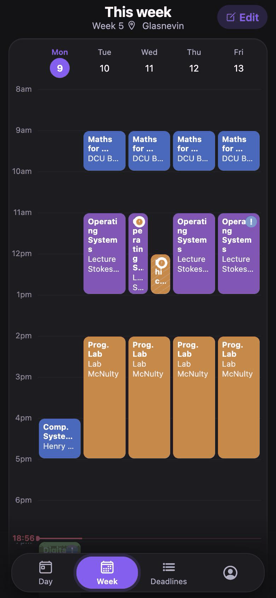
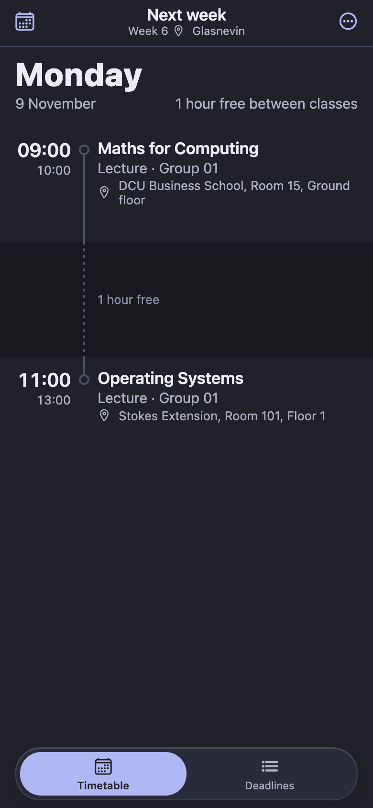
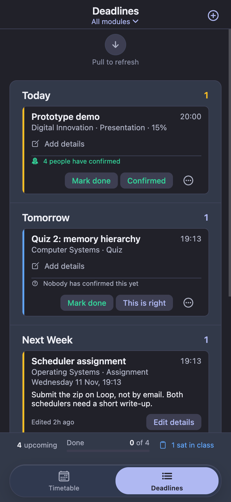

Your day, and the gaps in it
A clean day view with the free time between classes, and a week grid when you want the whole picture.
Free for anyone with a DCU email
Your programme, your groups and your labs in one place — with deadlines and cancelled classes shared by your classmates.
Nothing to install. Runs in your browser on your phone or computer.
Prefer an app icon? Add it to your Home Screen or get the Mac app.



What it does
Built by a DCU student for DCU students. Open it, and you can see where you need to be.
A clean day view with the free time between classes, and a week grid when you want the whole picture.
Add a deadline and classmates vouch for it, so you know the date is right.
When a lecture is off, someone in your class reports it and it shows on your timetable.
Follows your device, and stays easy to read on the walk to a lecture.
Pick your programme, your groups and your labs, and see only what’s yours.
Get it
Open it on any phone or computer — there’s no app store to search and nothing to download. Sign in with your DCU email and you’re in.
Open the web appiPhone or Android. It sits next to your other apps and you stay signed in.
In Safari:
In Chrome:
On a computer? Scan with your phone’s camera, then add it to your Home Screen from Safari’s Share menu or Chrome’s ⋮ menu.
Your week and deadlines in a window of their own, with class alerts as Mac notifications. macOS 14 or later.
Download for MacOn your phone now? Copy the link at the bottom of the page and open it on your Mac.